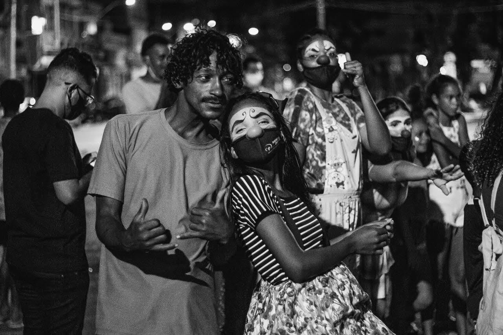

Nos conhecemos num treinamento para crianças e adolescentes em vulnerabilidade social na cidade de Buenos Aires, Argentina. Tínhamos muitas coisas em comum e uma delas era o grande desejo de promover a justiça e a equidade para aqueles que não usufruem. Nos casamos em abril de 2005 e fixamos residência na cidade de Belo Horizonte onde eu, Nury, já trabalhava com Jocum. Em janeiro de 2007, tivemos nosso primeiro e único filho, Francisco Esteban. Fernando trabalhou com crianças nas ruas e com visitas por cinco anos na cidade de Belo Horizonte, e eu com treinamento e administração.
Em 2010, entendemos que deveríamos buscar novos desafios e surgiu o Nordeste do Brasil. Ouvimos que a violência, abandono e injustiça social era gritante nesta região, no ano seguinte nos mudamos para o estado de Pernambuco. Nos juntamos a equipe que trabalhava nas ruas de Recife, em que por seis anos tivemos um contato significativo com o que ouvimos e nos sentimos desafiados a iniciar um trabalho onde pudéssemos conhecer a necessidade real e daí poder ajudar estas crianças, adolescentes e suas famílias nas ruas e comunidades.
Em 2010, entendemos que deveríamos buscar novos desafios e surgiu o Nordeste do Brasil. Ouvimos que a violência, abandono e injustiça social era gritante nesta região, no ano seguinte nos mudamos para o estado de Pernambuco. Nos juntamos a equipe que trabalhava nas ruas de Recife, em que por seis anos tivemos um contato significativo com o que ouvimos e nos sentimos desafiados a iniciar um trabalho onde pudéssemos conhecer a necessidade real e daí poder ajudar estas crianças, adolescentes e suas famílias nas ruas e comunidades.
Ao longo destes anos enfrentamos grandes gigantes e podemos dizer que estamos vencendo um por um. No ano de 2017 entendemos que era o tempo de mudar para o centro de Recife. Não tínhamos finanças, apenas uma direção de Deus. Neste mesmo ano tive que viajar para o Uruguai, cuidar de minha mãe que estava adoentada. Durante este período, fiquei fragilizada por estar longe de minha família, com muito frio e com muitas perguntas sobre o grande desafio de iniciar um ministério.
Em uma tarde fria e cinza de domingo, Deus me lançou um desafio, “Faça orações que somente Eu consiga responder. ” Minha resposta foi imediata, “Quero um carro grande e uma casa grande. ” Fiquei com minha mãe por sessenta dias e ao retornar ao Recife, vim com uma promessa de uma grande oferta para a compra do carro grande (Van) e da grande casa. No final de setembro do mesmo ano, nos mudamos para uma casa num bairro próximo ao centro de Recife e logo iniciamos o Projeto Resgate com a parceria da Tearfund e Igreja Batista em Coqueiral.
Em uma tarde fria e cinza de domingo, Deus me lançou um desafio, “Faça orações que somente Eu consiga responder. ” Minha resposta foi imediata, “Quero um carro grande e uma casa grande. ” Fiquei com minha mãe por sessenta dias e ao retornar ao Recife, vim com uma promessa de uma grande oferta para a compra do carro grande (Van) e da grande casa. No final de setembro do mesmo ano, nos mudamos para uma casa num bairro próximo ao centro de Recife e logo iniciamos o Projeto Resgate com a parceria da Tearfund e Igreja Batista em Coqueiral.
Jocum Marco Zero
Abordagem
Em meados do mês de julho, diante de tantos desafios surge uma nova iniciativa de Jocum Brasil, levando o nome de Jocum Marco Zero. Entendemos que precisávamos estar mais dias nas ruas, ter um contato significativo e a longo prazo com as pessoas que por diversos motivos estão em situação de rua. Nessa abordagem que fazemos semanalmente, revelamos fotos, levamos diversas brincadeiras, jogos, cinema na rua entre outras atividades. Nosso objetivo é construir um vínculo de carinho, apreciação e confiança. “Seu Fernando, cadê a minha foto? ” Essa é a frase que mais escutamos quando chegamos nas ruas. Quando a criança, adolescente ou adulto se vê em sua foto, é nítida a alegria e o sentimento de uma pessoa reconhecida e importante.
Em meados do mês de julho, diante de tantos desafios surge uma nova iniciativa de Jocum Brasil, levando o nome de Jocum Marco Zero. Entendemos que precisávamos estar mais dias nas ruas, ter um contato significativo e a longo prazo com as pessoas que por diversos motivos estão em situação de rua. Nessa abordagem que fazemos semanalmente, revelamos fotos, levamos diversas brincadeiras, jogos, cinema na rua entre outras atividades. Nosso objetivo é construir um vínculo de carinho, apreciação e confiança. “Seu Fernando, cadê a minha foto? ” Essa é a frase que mais escutamos quando chegamos nas ruas. Quando a criança, adolescente ou adulto se vê em sua foto, é nítida a alegria e o sentimento de uma pessoa reconhecida e importante.
Visitas
O fator de já ter um relacionamento significativo com eles nas ruas, torna a visita à família algo consequente e prazeroso. Chegar na casa sem o endereço certo é um desafio onde toda a comunidade se envolve, pois, a criança ou adolescente é conhecido por muitos. Em alguns casos, a rua é mais espaçosa, limpa e mais segura do que a própria casa. Em todas as famílias que visitamos, nos deparamos com grandes desafios e muitas necessidades, mas ao mesmo tempo vemos como é difícil para uma família compreender que é necessário pensar a longo prazo e juntos promover um bom futuro para todos.

O fator de já ter um relacionamento significativo com eles nas ruas, torna a visita à família algo consequente e prazeroso. Chegar na casa sem o endereço certo é um desafio onde toda a comunidade se envolve, pois, a criança ou adolescente é conhecido por muitos. Em alguns casos, a rua é mais espaçosa, limpa e mais segura do que a própria casa. Em todas as famílias que visitamos, nos deparamos com grandes desafios e muitas necessidades, mas ao mesmo tempo vemos como é difícil para uma família compreender que é necessário pensar a longo prazo e juntos promover um bom futuro para todos.


Contatos
Fernando ▶ +55 81 8564-5667
Nury ▶ +55 81 99590-5821